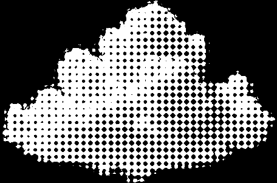

About
About
하늘 위 구름은 늘 그 자리에 있지만, 우리는 이름을 알지 못한 채 지나친다.
Cloud Frame은 여섯 가지 구름의 형태와 결을 기록한 아카이브다.
잠깐 멈춰 하늘을 올려다보듯, 천천히 들여다보길 바란다.

뭉게구름 타입
Cumulus Type
뭉게구름은 맑고 따뜻한 날 하늘 위로 솟아오르는 크고 하얀 구름이다.
지면이 태양열로 달궈지면 따뜻한 공기가 위로 올라가면서 수증기가 응결되어 만들어진다.
아래쪽은 평평하고 위쪽은 꽃양배추처럼 뭉실뭉실 부풀어 오른 형태가 특징이다.
주로 오후에 발달하며 날씨가 좋을 때 자주 볼 수 있지만, 크게 성장하면 천둥번개를
동반한 적란운으로 발전하기도 한다.